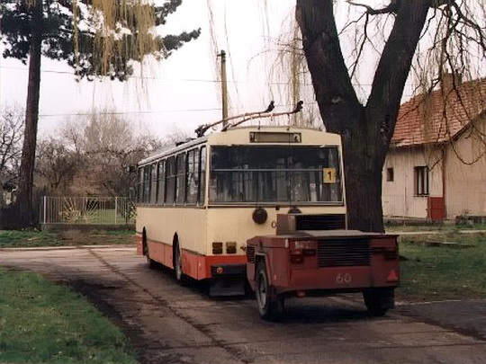

Hradec má nové trolejbusy. Už léta je líderem české elektromobility
Do Hradce dorazily nové trolejbusy Škoda 32Tr a 33Tr. Zatímco se jinde elektromobilita pořád vysvětluje na konferencích, tady už několik desítek let jezdí — jen dnes konečně bez dieselového vozíku za zadkem.
Dopravní podnik představil první šestici nových parciálních trolejbusů — čtyři dvanáctimetrové 32Tr a dva kloubové 33Tr. Parciální v překladu znamená, že pod trolejí jedou normálně a mimo ni pokračují na baterii. Tedy elegantní řešení problému, který má klasický trolejbus odjakživa: jakmile skončí dráty, stává se z něj velmi ekologicky stojící objekt.
Hradec tenhle problém řešil už v devadesátkách. Vybrané trolejbusy linky 1 pokračovaly z Nového Hradce do Kluků, kam trolejové vedení nevedlo, a za sebou proto tahaly jednonápravový vozík s dieselagregátem. Na Novém Hradci se stáhly sběrače, nastartovala malá elektrárna na kolečkách a jelo se dál. Dnešní parciální trolejbus dělá v principu totéž, jen s baterií a bez dojmu, že MHD právě veze elektrocentrálu na stavbu.

Nové vozy nejsou jen efektní šestikusová návštěva pro fotografy. Rámcová smlouva počítá až s 31 novými trolejbusy, takže pokud se plán naplní, půjde o opravdu výraznou generační obměnu flotily. A právě bateriový pohon mimo trolej dává městu větší flexibilitu: není nutné natahovat dráty nad každou ulici, kde by jejich instalace vyšla dráž než rekonstrukce půlky čtvrti.
Nové trolejbusy zároveň dostaly nový hradecký vizuál s městským „G“ a korunou. Pokud jste poslední roky měli pocit, že Hradec lepí nové logo úplně na všechno, co se nehýbe, mám dobrou zprávu: teď už i na věci, které se hýbou.
Hradecká MHD je v českém kontextu dlouhodobě jeden z lídrů elektrické městské dopravy. To není jen hezká věta z tiskové zprávy. Zhruba polovina vozového parku už je bezemisní — trolejbusy a elektrobusy — zatímco zbytek tvoří klasické autobusy se spalovacím motorem. Zajímavé je, co v tom mixu naopak nenajdete: žádnou mezietapu v podobě CNG nebo LPG autobusů. Dopravní podnik se téhle cestě záměrně vyhnul a šel rovnou od dieselu k elektrifikaci. Takže zatímco jinde se flotila posledních dvacet let skládala jako technologická lasagne diesel → CNG → hybrid → elektro, Hradec část vrstev prostě přeskočil.
Trolejbusy tu přitom jezdí od roku 1949 a Hradec k nim poměrně brzy přidal i elektrobusy. První vlastní elektrobus se objevil v roce 2014 a o několik let později už město provozovalo jednu z největších elektrobusových flotil v republice. Ne jako demonstrační projekt pro ministrův selfie moment, ale jako normální linkovou dopravu.
Dnes tak Hradec kombinuje klasické trolejbusy, parciální trolejbusy a elektrobusy podle toho, kde který typ dává smysl. Někde trolej, jinde baterie, někde obojí. Bez ideologické války, bez potřeby pokaždé vyhlašovat zelenou revoluci a bez dramatických debat o tom, jestli Evropská komise osobně přijede zabavit někomu Octavii TDI.
Elektrická doprava tu není módní heslo. Je to technologie, která se po vrstvách skládá už desítky let — od trolejbusu s dieselagregátem na vozíku až po dnešní bateriové vozy.
Takže ano, nové 32Tr a 33Tr vypadají dobře. Mají baterie, nový design a první cestující je velmi pravděpodobně během pár dní pokřtí kelímkem kávy, protože civilizace musí pokračovat.
Ale když dnes někdo mluví o elektrifikaci MHD jako o budoucnosti, Hradec může docela oprávněně ukázat směrem k vozovně a říct: „Budoucnost? Jo. Ta nám tady jezdí na směny.“